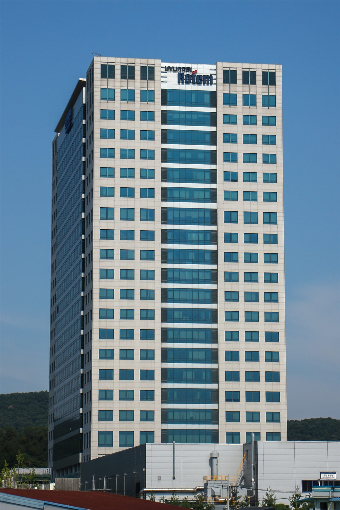

인천화교협회 게시판에 무역회사 구인 공고… 중국어 구사 인력 모집
인천화교협회 게시판에 무역회사의 구인 공고가 올라왔다. 중국어와 한국어를 함께 쓰는 인력을 찾는 내용으로, 화인 사회의 구인 경로를 보여 주는 사례다.
이문창 기자 · 2026.09.11
橋화인소식

인천화교협회 게시판에 무역회사의 구인 공고가 게시됐다. 중국어와 한국어를 함께 구사하는 인력을 찾는 내용이다.
광고 문의 · 300×250화교협회 게시판은 오랫동안 구인·구직과 임대, 행사 안내가 오가는 지역 정보 창구 역할을 해 왔다. 공식 채용 사이트와는 다른 경로로 정보가 순환한다.
무역과 물류 분야는 재한 화인이 오래 종사해 온 영역 가운데 하나다. 언어 능력과 양국 상거래 관행에 대한 이해가 함께 요구되기 때문이다.
최근에는 전자상거래와 통관 대행, 국제 물류 플랫폼 관련 직무 수요가 늘어나는 추세로 알려졌다.
구체적인 근무 조건과 지원 방법은 협회 게시판 공고를 통해 확인할 수 있다.
출처·참고 (사실 확인용 — 본문은 직접 재작성)
· http://www.incheonhwagyo.org/
· http://www.incheonhwagyo.org/